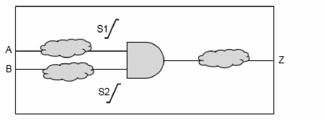

ETM Generation for MMMC Designs
In MMMC configuration, for generating ETM, only one view should be active. If you need to generate ETM for a specified view, however, the view is not active in setup as well as hold mode, then the software will show an error. It is a prerequisite that the view should be active for both setup and hold analysis. You can use the set_analysis_view –setup {$viewName} –hold {$viewName}command before running the do_extract_model command to achieve this.
After model extraction for MMMC designs, the dumped assertion files will be added with ${viewName} suffix, and the dumped derate related assertion files will be added with ${delayCornerName} prefix. You need to choose the corresponding file while using the extracted models.
Slew Propagation Modes in Model Extraction
Model extraction supports worst slew and path-based slew propagation modes. These are described below.
- Worst Slew Propagation In worst slew propagation mode, the worst of all the slews coming at a convergent point is propagated for characterizing the delay of an arc.
- Path-Based Slew Propagation In path-based slew propagation mode, the slew in the actual path is propagated.
The slew propagation mode can be controlled by using the timing_extract_model_slew_propagation_mode global variable. The default value of this global variable is worst_slew.
An example of slew propagation is given below.

In worst slew propagation mode, for characterizing both A-Z and B-Z delay arcs, the worst slews S1 and S2 will be propagated to calculate the delay of logic downstream to the AND gate.
In path-based propagation mode, the slew S1 will be propagated to characterize the A-Z arc, whereas S2 will be propagated to characterize the B-Z arc.
Return to top